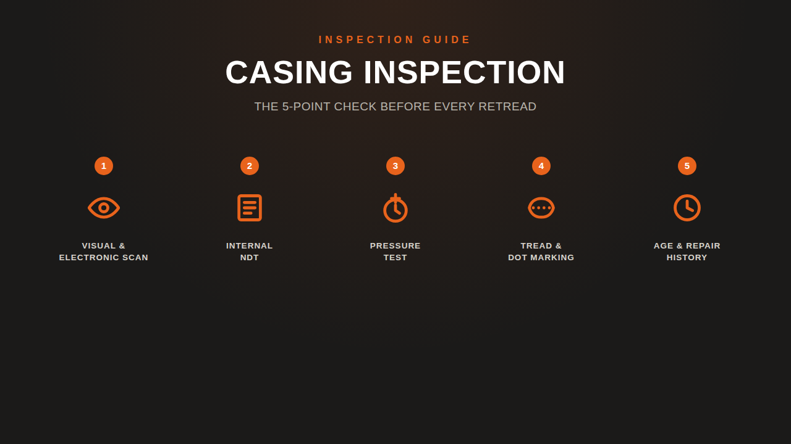

Home / Blog / Casing Inspection
INSPECTION GUIDEThe five checks that decide whether a tire casing is fit to retread — nail-hole scanning, internal NDT, pressure testing, tread/DOT marking, and age — and what disqualifies one.
Published August 24, 2026 · Good Hope Retreaders

A retread is only as good as the casing underneath the new tread — and the entire reason a properly built retread performs the same as a new tire is that a bad casing never makes it to the buffer in the first place. Our Retread Tire Safety post covered why casing selection is the safety variable a shop controls. This one covers the how: the five checks that actually happen before a casing is cleared for retreading, and what disqualifies one at each stage.
Every reputable retread process starts with a full manual inspection, bead to bead. Oliver Rubber describes its technicians inspecting "every retread casing manually from bead to bead with diligence and precision," and Bandag's process opens the same way — a trained specialist's visual inspection that already rejects casings with damage too severe to proceed.
Visual alone isn't enough, though — pinholes and old nail punctures aren't always visible to the eye. Both major retread system providers back the visual pass with electronic detection: Bandag uses high-voltage nail-hole detectors to find pinholes invisible to a human inspector, and Oliver Rubber runs every casing through electronic nail-hole detection as a standard step. Work Truck Online's rundown of retread inspection confirms this is the norm across the industry, not a premium add-on: a modern casing inspection line typically runs visual, electronic-liner, laser-shearography, and X-ray checks in sequence. Every hole gets probed and evaluated — spread from rust or flexing means it's a candidate for a section repair; anything worse means the casing is scrapped here, before it reaches the buffer.
Some of the most dangerous casing defects are completely invisible from the outside — belt-edge separations, trapped air pockets, and undercure sitting inside the plies. Catching them requires non-destructive testing (NDT), and laser shearography is the method most retreaders lean on. As Commercial Carrier Journal's "Retreads Unwrapped" explains it, the casing goes into a vacuum chamber with dual laser cameras; as pressure drops slightly, any trapped air or separation expands just enough to register as a surface deformation the cameras can detect and map. CCJ's framing is blunt about why this step exists: "Identifying casing problems is the first critical step in producing a high-quality retread product."
Where a casing's construction calls for it, X-ray inspection supplements shearography to check steel belt and cord integrity directly. A casing that shows a real separation or belt anomaly at this stage doesn't move forward — no amount of skilled buffing or curing fixes a defect that starts inside the ply structure.
The third check exists as much for technician safety as for tire quality. A casing that's been run underinflated or overloaded can develop ply-cord fatigue in the upper sidewall — and if that fatigue goes undetected, it can eventually let go as a zipper rupture: a sudden, explosive tear along the sidewall that Tire Review describes as capable of running "10-12 inches long typically but... as large as three feet," releasing air with enough force to injure anyone standing nearby. The danger, per Tire Review, is that a fatigued casing can rupture with no warning.
Inflating the casing under controlled pressure and inspecting the sidewall and shoulder for bulges catches this risk before the tire is ever handled again for buffing or building — at which point a hidden zipper-prone casing becomes a hazard to the technician working on it, not just a future road failure.
Two administrative checks round out the physical inspection, and both are pass/fail. First, remaining tread depth: casings pulled with less than 4/32" of tread are far more likely to be rejected than those pulled at 5/32" or more, per Work Truck Online's rundown of retread eligibility — thin remaining tread usually means the casing ran longer, hotter, and closer to its structural limits before it was ever pulled.
Second, the DOT marking. Under 49 CFR 571.117 (FMVSS 117), a casing has to carry its original DOT symbol to be retreaded at all — a casing with the DOT marking removed by grooving or branding is disqualified outright, full stop. Once a casing clears every other check and is rebuilt, the retreader brands its own new DOT symbol followed by "R" onto the finished tire — a legal certification tying the finished product back to that shop's process. We cover that certification step in more depth in our safety data post.
The last check isn't a machine test — it's a records review. Age matters, but less than most people assume: Michelin's own published guidance, reported by Modern Tire Dealer, allows up to 7 years for long-haul casings and up to 10 years for regional or severe-service applications, and the retreaders quoted in that piece are consistent that condition — not the calendar — is what actually decides eligibility. A well-maintained 6-year casing that passes checks 1-4 outperforms a poorly maintained 3-year one that doesn't.
Repair history is the other half of this check: how many times has this casing already been retreaded, and what kind of repairs does it carry? Some jurisdictions codify hard limits here — California, for example, caps retreading at no more than two cycles and permits no casing repair beyond what a nail puncture requires. Even where no regulation sets a hard number, a casing's repair record is part of the file a shop reviews before clearing it for another cycle — a casing that's already carrying section repairs from prior damage gets closer scrutiny at every check above, not a pass on reputation.
| Check | What it catches |
|---|---|
| 1. Visual + electronic nail-hole scan | Punctures, pinholes, and prior repair scars — bead to bead |
| 2. Internal NDT (shearography / X-ray) | Belt-edge separations, trapped air, undercure — invisible from outside |
| 3. High-pressure inflation test | Sidewall/shoulder bulges and zipper-rupture risk |
| 4. Tread depth + DOT/FMVSS marking | Over-run casings (<4/32") and casings that fail federal certification requirements |
| 5. Age + repair history review | Casings with excessive prior repairs or an unfit service history |
A casing that clears all five isn't just "probably fine" — it's been checked at the level a retreader is legally certifying when it brands a new DOT "R" symbol onto the finished tire. The equipment that makes this repeatable — an inspection spreader for full 360° bead-to-bead and inner-liner visibility, paired with proper skiving tools for any repairable damage found along the way — is covered in our equipment buyer's guide.
We supply inspection spreaders, skiving stations, and repair tools with transparent all-in Canadian pricing and delivery from our Ontario warehouse — manufacturer-direct, no distributor markup. Tell us your volume and casing sizes and we'll spec the right line for your shop.
Get an equipment quote →Send us your requirements and we'll get back to you within 24 hours with pricing and lead times — no obligation.